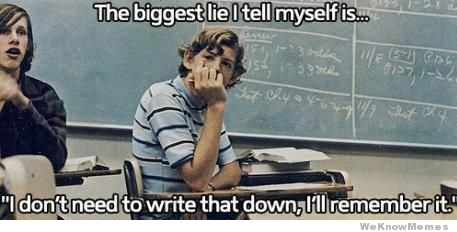
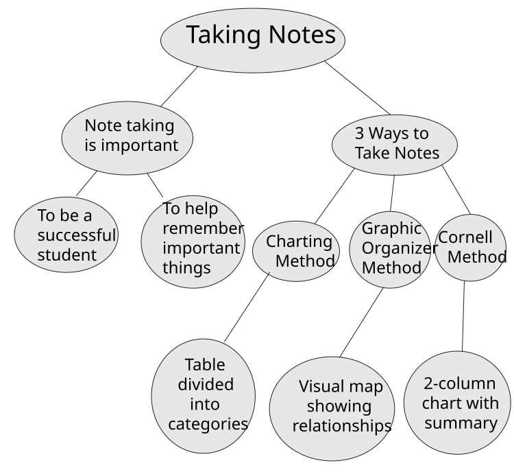
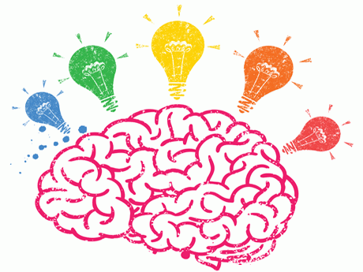
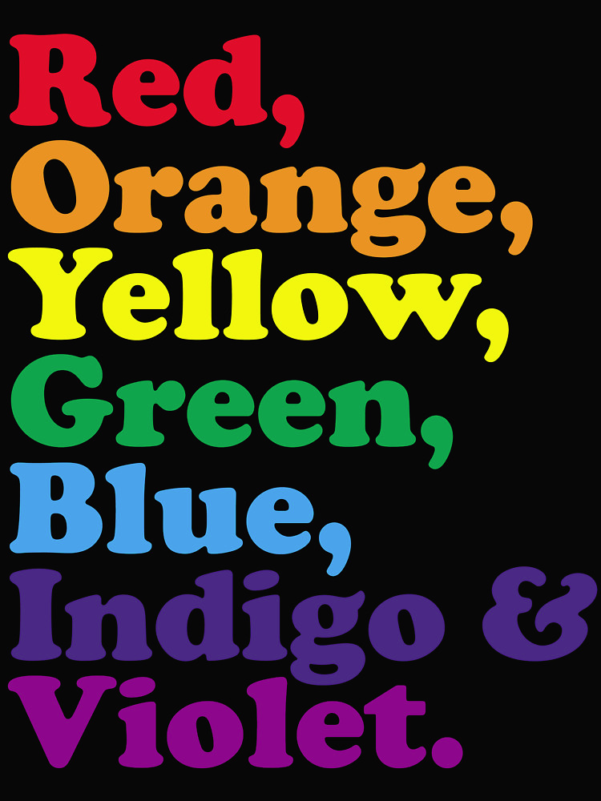
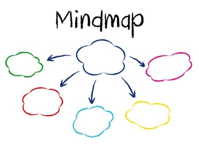

Module 3: The Learning Process and Assessment
3.1 Study Skills
In this section you are going to explore...
- Study Skills: Reading
- Study Skills: Note-Taking
- Study Skills: Memory
SECTION 1: STUDY SKILLS
The word “studying” can mean a lot of different things to different people. For some people, studying looks like reading a textbook. For others, studying is using flashcards. Some people take notes or quiz themselves to study. Regardless of what studying strategies you use, studying should help you gain a better understanding of the material that you’re trying to learn. In this module, we will focus on 3 main skills: reading, taking notes and memory strategies.
Study Skills - Reading
Reading is a primary source for gaining information and learning. To learn, apply, and master specific reading strategies is to make study time more efficient and effective. It is time well-spent. In fact, it is guaranteed to save you time in the long run.
There are numerous aids that you can use to increase your reading “brain power”. Pre-reading techniques give you an “overview” and help you determine the importance of the materials as well as your purpose and rate for reading. Flexible reading habits lead to quality study skills and increased memory. Learning how to survey textbooks, spot keywords, skim, find main ideas, read illustrations and check for comprehension definitely will improve your understanding and grades. So, give the following reading hints, tips and methods a try; and soon they will become habits you won’t want to break!
Pre-Reading Techniques
Before we start to read, it’s important to set ourselves up for success. Part of ensuring our success is to use anticipatory techniques. Anticipatory techniques are what we use before we start reading in order to make our reading more effective. If you just start reading without establishing why you’re reading or what you’re reading for, you will find that your reading will be much less effective and you will understand and retain less of what you read.
Anticipatory techniques that help you retain and understand your reading better are:
- Engaging Prior Knowledge - What do I already know about this subject? Make a list or write a short summary of everything that you already know about this topic.
- Questioning - Make a list of questions you have about this topic. What are you curious about? What confuses you about this topic?
- Make Predictions - Write a list of predictions that you have about the reading.
- Identify a Purpose - Think about the reason that you are reading. What kinds of information are you looking for? By identifying the purpose of your reading, your brain will automatically begin to look for cues that match up with your purpose.
Selecting a Reading Speed
There are many ways to do any one thing - many approaches to solving a problem, painting a picture, and achieving desired results. Reading for different purposes is no different. You probably would not read a newspaper in the same manner and with the same goal as you would read a science textbook. You would read a pamphlet about how to construct a bookshelf differently than a novel or short story. Once you clearly understand your goal and the type of reading material, match these with an appropriate reading rate.
| Strategy for Reading Rate |
Purpose |
Materials |
|
scanning |
Gives a sense of main topics and ideas, gives a clear picture of the overall organization |
Dictionary, lists, newspapers, magazine articles, textbook introduction |
|
skimming |
To find main ideas, to survey for general ideas, to identify relationships among topics/headings/subheadings, to look for keywords |
Easy-to-read print, magazines, fiction, previewing textbook chapters |
|
rapid reading |
To read all of the words at a fast rate, to search for specific information |
Same as skimming but reading for main ideas and details |
|
slow reading |
To find all of the available information |
Detailed textbook reading, technical articles, poetry |
|
careful reading |
To find the procedure, to follow step-by-step instructions, to analyze and evaluate content. |
Complex ideas or concepts, nonfiction, sequential/detailed reports, scientific data or texts |
How to Read your Textbooks
Often, the reading you will do will be in a textbook. As established above, reading a textbook will be different than reading a novel or a newspaper. In your learning, you will likely need to read a textbook often, so we have prepared some tips below specifically for textbook reading.
Step 1: Previewing a Textbook
Previewing a textbook is important and can save you time in the long run. It gives you a much better overall picture and forces you to set your mind on the topic so that you can “zero in” on the main ideas. Follow these brief and simple steps for your next textbook reading assignment.
- STUDY THE CHAPTER TITLE
This gives the shortest possible summary of the entire selection. Think about what you already know about the topic, or about what you think the topic will be about.
- QUICKLY READ OVER FIRST AND LAST PARAGRAPHS
This will provide the main ideas and help you see relationships between them.
- READ HEADINGS/SUBHEADINGS
Main headings are often in larger type, capital letters, and bolded font. Subheadings are usually in smaller type, underlined, italicized, capitalized or set in the margin. Headings and subheadings are often the keys to understanding the relationships between these important ideas.
- SAMPLE TEXT AT RANDOM
Read the first and last sentence of each paragraph. Note the boldface or italicized words. Examine definitions, listings of items, pictures, diagrams, graphs, etc.
Step 2: Textbook Marking
Many students find it very helpful to highlight, underline, or signal what is important in a textbook reading selection. The best method is to mark directly in the text if the book belongs to you. Read the entire paragraph first before you mark anything. This allows you to see the concept presented and look back on what is important. Use a highlighting pen to mark words, phrases and passages, or identify main ideas and details in the margins by using a system of abbreviations, symbols, or numbers.
Most people have the tendency to underline or write too much information. Usually, only 10 percent of what you read needs to be underscored or marked. Noting significant ideas and details needs to be an active, selective process. Highlighting too much may give you the impression that you have memorized or understood the information when you really haven’t. Be sure to also test yourself to see if you can recall the information you’ve highlighted.
Mark important material (or big ideas) such as:
- Titles and subtitles
- Concepts on how titles/subtitles are related (comparisons/contrasts/similarities)
- Italicized/boldface words
- Definitions and meanings
- Examples
- Lists
- Main ideas (first and last sentences in a paragraph)
Let’s review the process of effective textbook reading by viewing a short youtube video called “How to Read Your Textbooks” by Clarissa.
When Reading is Hard
DID YOU KNOW . . . ?
- After a single reading, the average student forgets 80% of what he or she has read.
- Research has shown that students who spend 25% of their time reading and 75% of their time reciting what they have read retain much more of the information than those who spend 100% of their time reading.

Study Skills - Note Taking
Note-taking is a critical school survival skill. Without effective text notes; learning, retention, and exam studying efficiency are greatly reduced. To be a successful student, good study tools must be correctly and consistently applied with ease. Note-taking should be one of your top priorities among all of the study skills. It provides a reference that may be reviewed many times as an aid to memory. Good note-taking methods will make life easier and will help the ongoing process of learning become more meaningful.
Why Take Notes?
Why is note-taking an important skill? Note-taking accomplishes many goals that help students be more successful. There are a number of benefits to note-taking.
- Keeps you alert. Notetaking keeps your body active and involved and helps you avoid feelings of drowsiness or distraction.
- Engages your mind. Listening carefully and deciding what to include in notes keeps your mind actively involved with what you hear.
- Emphasizes and organizes information. As you take notes, you’ll decide on and highlight the key ideas you hear, identifying the structure of a class presentation. You’ll also be able to indicate the supporting points of a presentation, making study and understanding easier after class. Such organized notes also make it easier for you to link classroom learning to textbook readings.
- Creates a condensed record for study. A set of concise, well-organized notes from each class session gives you what you need for study, learning, and review after class.

Note-taking Tips
Note-taking is a skill that can help you do well on all your schoolwork — everything from taking tests to researching a paper. But unfortunately, most schools don't have classes that teach you how to take notes. So here are some tips:
- Write down key facts. If you have a teacher who writes notes on the board, that's a bonus: you can copy them down. If not, write down the most important points from class. Does your history teacher mention the date of a key WWII battle? Does your English teacher give examples of Shakespeare's use of dramatic irony? Does your math teacher go over a particular formula? Write it down!
- Don't overdo it. Don't go crazy taking notes, though. You'll be frantic if you try to write down every word that's said in class. And if you focus too much on getting your notes right, you might miss important points. Some people actually learn better by listening, writing down a few key points, and then going over the material after class when they have more time.
- Ask. Don't be afraid to ask the teacher to repeat something you miss. If the teacher's going too fast, chances are your classmates will also be relieved to hear the information again. If you don't want to ask in class, see your teacher afterwards. It's much easier than wondering if you got the notes right as you study. Remember that your teachers are here to help you. If there are areas that were unclear to you, they will want to know!
- Compare. Keep your notes handy when you're doing your reading assignments. Compare what you wrote with what the readings say — you may even want to add to your notes as you read. Going over your notes with a friend and comparing what the two of you put down can help reinforce what you're learning. It also can help you remember information when it's time for the test. And going over your notes will alert you and your friend to any errors.
- Copy. Depending on how neat your handwriting is, you may want to recopy your notes when you get home. If you've taken notes in a hurry, you're more likely to figure out an unreadable word or sentence on the day of the lesson than you are weeks later when you look back over your notes in preparation for a test.
- Organize. Keep notes for each subject in one place so you can find everything easily when it comes time for a test. That may mean keeping a notebook or section of a notebook for each subject as you take notes in class. Remember “One Class = One Notebook + One Folder.”
Three Main Types of Note-Taking
Taking Notes
To be a successful student, it’s important to take good meaningful notes. No student can remember every word the teacher says about a topic or everything he/she reads. Note taking can help you remember things that are important.
Learning to take notes is not difficult once you learn how. You will be learning about and practicing three ways to take good notes.
The first way to take notes is to use the charting method. With the charting method, you organize important information into several categories. Each category can contain subtopics, or groups of information about the main topic.
The second way to take notes is called the graphic organizer method. A graphic organizer is a visual map, or a map you draw that shows how important information goes together.
The Cornell Method is both a note-taking and a study strategy. This method provides a systematic way for condensing and organizing notes based on a two-column organizer. A review session the follows every note-taking exercise provides a chance to question and summarize learning.
The Charting Method
Whenever information in a course is presented in a distinct format such as chronological or numerical order, it’s probably a good idea to set up a table on your paper complete with columns and suitable headings. As you read or listen, write down key information under the appropriate heading. The advantage of this method of note-taking is that it minimizes the amount you need to write. Needing to be able to accurately identify the categories appropriately is the major disadvantage of this method.
Example:
| Note-Taking Methods |
Description |
| Charting |
Organize information into categories |
| Graphic Organizer |
A visual map that shows how information goes together |
|
Cornell |
Condenses and organizes information into a two-column chart |
The Graphic Organizer
The graphic organizer is a form of note taking which relates each piece of information to every other piece of information. Graphic organizers enable you to organize the content of a text or lecture in the form of a picture, which allows you to immediately see how facts and ideas are connected. Example:

The Cornell Method
The Cornell Method offers a consistent way to condense and organize notes without spending a lot of time recopying. The main space for writing notes is on the right side of the page. Use the left side to record a keyword or phrase to serve as a signpost for the detailed information you’ve written down on its right. Within 24 hours of taking the notes, it is suggested that the student revise and write questions and then write a brief summary in the bottom five to seven lines of the page. This helps to increase understanding of the topic.
Example:
| Topic/keywords/ideas: |
Note - Taking Methods |
|
Importance of Note-Taking Three Main Types of Note-Taking Charting Method Graphic Organizer Method Cornell Method |
Help students be successful Charting, graphic organizer, Cornell Information is organized into a table with categories Information is organized visually, relationships among ideas/concepts are clear Paper is divided into 2 columns with a summary section at the bottom |
|
Summary: |
Note-taking is important for success. There are three main types of note-taking methods: charting, graphic organizer, and Cornell. |
Watch the following video for a summary of these styles of note-taking. This is a great summary of the note-taking skills that you have been introduced to.
Study Skills - Memory
We’ve covered how to read effectively and how to take good notes. These are ways for us to take in information as well as record it. However, another key facet of learning is memory. How can we ensure that the work we put into reading and note-taking becomes embedded in our memories so that we can recall it later?

Memory seems like it should be straightforward, but it often isn’t. In a perfect world, we could just tell ourselves to remember something, and we would! But sadly, anyone who’s ever forgotten something important knows that it’s not quite that simple. Before we dive into memory tricks, let’s take some time to understand how memory (and the brain) works.
Memory can be divided into two parts: short-term memory (or working memory) and long-term memory. When you are learning something new, that information is being stored in your working memory. Your working memory can hold about 4 “chunks” of information at a time. This storage, however, is temporary. Unless you move the information from your working memory into your long-term memory, it will quickly disappear.
So how do we move information from our working memory into long-term memory? There are a number of strategies that we can use to help our brains hold onto information for longer periods of time.
Watch the following video for a great overview of how memory works and how it applies to learning.
Memory Tricks and Tips
Often studying involves some degree of memorization. Some students find that using particular memorization tactics can improve their memory. Here are a few of the popular memorization strategies that might work for you.
- ACRONYMS: Acronyms are words formed out of the first letters of a series of words you are trying to remember. A popular acronym is "Roy G. Biv" which is used to remember the order of colors of the spectrum (Red, Orange, Yellow, Green, Blue, Indigo, and Violet). You used an acronym in Module 2 when you were learning about SMART goals. (specific, measurable, attainable, relevant, and timebound)
- ACROSTICS: Acrostics are phrases or poems in which the first letter of each word or line functions as a cue to help you recall the words that you are trying to remember. One popular example is the phrase “Please Excuse My Dear Aunt Sally” which is used to remember the order of operations in math. (parentheses, exponents, multiplication, division, addition, and subtraction)
- NARRATIVE: Some find making up a story with the lists of words throughout the narrative aids retention. This is even more powerful when you can visualize the story happening in your mind.
- RHYMES: Remember the phrase "i before e except after c"? You probably remember this well because it is a rhyme. Rhyming can enhance retention as well.
- SPEAK OUT LOUD: Although this may make you look a little crazy, give it a go! You will be surprised how much more you can remember when you’ve said it out loud. You’re 50% more likely to remember something if you say it out loud instead of simply reading it over and over.

- IMAGERY: Drawing or imagining a picture of what’s being studied can help you recall specific information when you mentally refer to this image in a test situation.
- VISUALIZATION: Graphic organizers can help you organize and remember relationships and categories of information.
- FLASHCARDS: Flashcards can be carried with you and studied while riding in a vehicle or passing time between classes.
Final Tips for Studying
Preparing for tests isn’t about cramming the night before because you will have forgotten most of the material you had learned. It’s about study habits and course maintenance . . . working at it every day. You may have to sacrifice at times. However, believe it or not, you can spend less time studying if you do the right things.
Watch the following video from ASAPScience about the 9 BEST Scientific Study Tips.